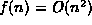
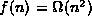
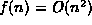
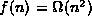
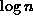

Data Structures and Algorithms
with Object-Oriented Design Patterns in C++
Data Structures and Algorithms
with Object-Oriented Design Patterns in C++
 show that . show that . show that show that
show that . show that . show that show that | f(n) | g(n) |
| 10n | |
|
| |
|
| |
|  | |
|
| |
|
| |
|
| |
|
| |
|
| |
|
| |
|
| |
)
satisfy the identities

for  .
.


f (n, 10, 0); g (n, m, k); h (n, m, 1000000);
for (unsigned int i = 0; i < n; ++i)
f (n, m, k);for (unsigned int i = 0; i < e (n, 10, 100); ++i)
f (n, 10, 0);for (unsigned int i = 0; i < e (n, m, k); ++i)
f (n, 10, 0);for (unsigned int i = 0; i < n; ++i)
for (unsigned int j = i; j < n; ++j)
f (n, m, k);
unsigned int f (unsigned int n)
{
unsigned int sum = 0;
for (unsigned int i = 1; i <= n; ++i)
sum = sum + i;
return sum;
}).
What value does g compute?
(Express your answer as a function of n).
Give a tight, big oh expression for the worst-case
running time of the function g.
unsigned int g (unsigned int n)
{
unsigned int sum = 0;
for (unsigned int i = 1; i <= n; ++i)
sum = sum + i + f (n);
return sum;
}
and the function g is given in Exercise ).
What value does h compute?
(Express your answer as a function of n).
Give a tight, big oh expression for the worst-case
running time of the function h.
unsigned int h (unsigned int n)
{ return f (n) + g (n); }
 Copyright © 1997 by Bruno R. Preiss, P.Eng. All rights reserved.
Copyright © 1997 by Bruno R. Preiss, P.Eng. All rights reserved.